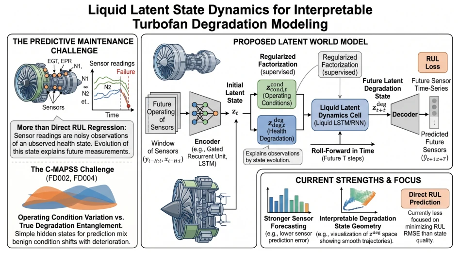
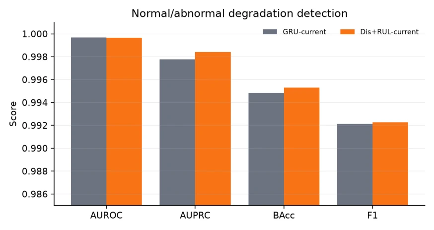
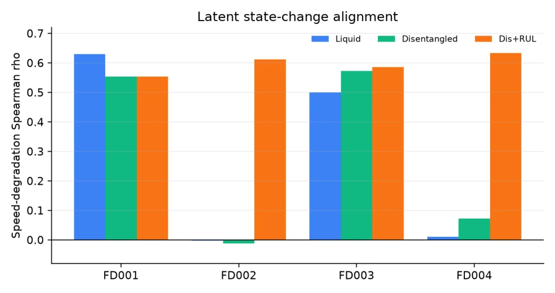
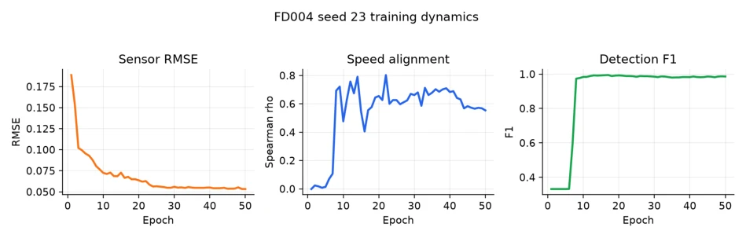
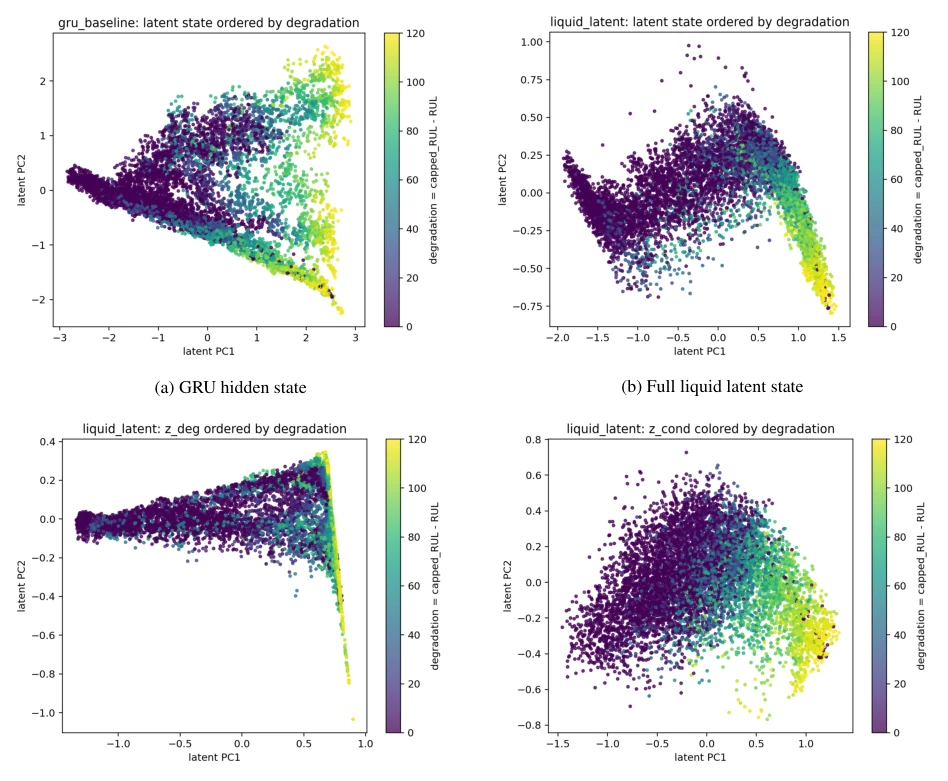

航空发动机预测性维护的核心痛点在于传感器信号混杂了“健康退化”和“工况波动”。现有工作多关注直接回归RUL（Saxena et al., 2008; Lei et al., 2018），导致隐藏状态被工况噪声污染，缺乏物理意义。虽然世界模型（World Models）和潜在动态（Latent Dynamics）在RL中流行（Ha & Schmidhuber, 2018; Hafner et al., 2019），但工业RUL模型常忽略状态几何结构。液体网络（Liquid Networks）虽能处理连续时间动态（Hasani et al., 2021），但缺乏针对退化轨迹的显式约束。此外，无监督解耦往往脆弱（Bengio et al., 2013）。本文旨在解决状态表示中退化与工况纠缠的问题，学习一个既可用于预测又具备可解释性的健康状态轨迹，填补了现有模型在状态几何可解释性上的空白。
—

Figure 1: Motivation for learning latent degradation dynamics. Sensor observations mix health degradation with operating-condition variation; the desired representation is an interpretable hidden-state trajectory whose evolution exposes the degradation trend behind future observations.
Figure 2: Framework of the proposed liquid latent dynamics model. The method encodes a history window into degradation and condition states, rolls the degradation state forward with liquid dynamics conditioned on future operating settings, and decodes the resulting hidden-state trajectory into future sensor predictions. The central object is the learned evolution trend of the latent degradation state, rather than a direct sequence-to-sequence mapping.
Figure 3: Sensor forecasting RMSE by subset. The proposed Dis+RUL model provides the clearest improvement on the multi-condition subsets FD002 and FD004.

Figure 4: Normal/abnormal degradation detection metrics for current models. Detection is close to saturated under the selected split; Dis+RUL gives small but consistent gains in AUPRC, balanced accuracy, and F1.

Figure 5: Latent state-change alignment by subset. Speed ρ measures the Spearman correlation between degradation and the average magnitude of ∆z. The full Dis+RUL objective strongly increases this alignment on FD002 and FD004.

Figure 6: Training dynamics for FD004 seed 23. Forecasting error decreases, detection F1 becomes high, and speed- degradation alignment rises from near zero to a strong positive value, indicating that the learned state increments become ordered by degradation during training.

Figure 7: PCA visualization of learned states on FD004 with seed 23, colored by capped degradation. Compared with the GRU hidden state, the proposed model learns a more ordered latent evolution. The degradation component zdeg